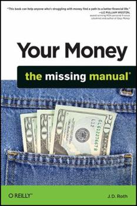

Your Money: The Missing Manual

By JD Roth
Book Summary
This book is a great primer on how to think about money.
The first two chapters “Money and Happiness” and “Setting Goals” are more than worth the cost of the book. I have focused on these two chapters because they describe a holistic mindset for wealth-building: (1) money is a tool to achieve other goals (2) spend less than you earn, and spend intentionally.
The other chapters about budgeting, big purchases and investing are good, but it's been over 10 years since this book came out, and there are better resources available on those topics. The first two chapters are the best I've seen on money mindset — it taught me that managing your psychology is an integral part of personal finance.
Notes
How Money Affects Happiness
Very little — less than 10%.
Happiness is determined by:
- Genetic set point (40%): A happiness range that you're born with
- Intentional Activity (40%): Pursuing meaningful goals
- Circumstances (10%): Age, Nationality, Job Security, Income
Happiness is mostly state maintenance — staying healthy, helping others, embracing routine, maximizing experiences and relationships, prioritizing and pursuing meaningful goals and having some semblence of security.
“Doing and being is better than having.”
There's a simple formula in this book that made me think:
Happiness = what you have / what you want.
This implies you can increase happiness in two ways: (1) increasing your haves and (2) reducing your wants.
Reducing Wants
The fastest way to become happier is to want less. This does not necessarily mean reducing the scope of what you want — it means wanting just a few things that are truly meaningful to you. With clarity on your goals, you can choose to focus on a few things that bring happiness. This makes you more likely to make meaningful progress towards these goals, which as you'll recall, is an important component of happiness.
Reducing wants also makes sense to me because I have been practicing gratitude. I like to think of gratitude as learning to want what I already have. Practicing gratitude has made me atleast 30-40% happier.
Increasing Haves
Discretionary time, mobility, freedom, relationships, health are all interchangebale forms of wealth. Having money helps you maintain and improve these areas. Saving money, earning more, spending intentionally and investing for the future are ways to increase money — in service of improving quality of life.
“What we get from this adventure is just sheer joy. And joy is, after all, the end of life. We do not live to eat and make money. We eat and make money to be able to live. That is what life means and what life is for.”
— David Brooks
Inverting the Formula
If your wants increase with money, it will actually decrease your happiness. This is the infamous hedonistic treadmill.
“Desire is a contract you make with yourself to be unhappy until you get what you want.— Naval Ravikanth
When you define "enough", you get a sense of freedom. You need goals.
Goal Setting
Sacrifice
Coupled with the concept of goals is sacrifice. I realized this very late.
“Life is like a giant smorgasbord with more delicious alternatives than you can ever hope to taste. Choosing a goal often means rejecting some things you want in order to get other things that you want or need even more.”.— Ray Dalio
The goal is not to have everything, it's to have a few meaningful things. The first step is to clarify what you would be satisfied with. You're much more likely to succeed with dogged focus on a few goals. When Bill Gates' father asked both him and Warren Buffet to separately write down own word that determined their success the most, both wrote down "focus" (from Warren's documentary).
Focus is continuous direction of attention and work at a task despite other things happening.
Questions
Journalling did not work for me for the longest time. It somehow felt cheesy writing things to myself. Then I discovered writing as a tool for thought. Writing is not just a placeholder for thought, it's a medium for thought. You think via writing. When journalling, you have to be honest. After accepting this, my journaling game leveled up. I trusted the process and started being brutally honest while answering questions.
Here are the questions in the book:
1. Imagine that you have enough money to take care of your needs, now and in the future. How would you live your life? Would you change anything? What would you do with the money?
2. Now imagine that you visit your doctor and she tells you that you have 5–10 years left to live. She says that you won’t feel sick, but you’ll have no notice of the moment of your death. What would you do in the time you have left? Would you change your life? How?
3. Finally, imagine your doctor shocks you with news that you have only 24 hours left to live. If you only had a day to live, what dreams would you have left unfulfilled? What would you wish you had finished? What would you wish you had done or been? What would you have missed?
These questions are powerful tools for figuring out what’s important to you. Naturally your priorities change over time — I journal on these questions during my quarterly planning. Actually taking these questions seriously and putting immense thought into it might be one of the most leveraged things you can do for your happiness (and your wealth). Goals help you know what the money is for.
Investing
Investing is a long-term game. Your timeline should be in decades, not a few years. Do not try to time the market.
Warren Buffet: "If you expect to be a net saver during the next 5 years, should you hope for a higher or lower stock market in that period?" He continues: "You want lower prices, of course. If you'll be investing for the next decade or two, you want to buy your stocks cheap!"
Diversification of your portfolio spreads risk and helps in the longer run.
Asset allocations mentioned in the book:
- 50% 500 Index + 50% Total bond market
- 10% Bonds + 60% US Stocks + 30% international stocks
- 25% 500 index + 25% small cap index + 25% international stock + 25% Total bond
- 40% Total bond market index + 40% Total stock market index + 20% Total international stock
Stick to index funds with expense ratios below 0.5%. The author recommends Vanguard.
Rebalancing Portfolio: Rebalance if asset allocation is way out of line, but don't worry about small changes. Especially if there are fees involved in rebalancing.
Dollar Cost Averaging: Spread investments over time to average out any sudden changes to price.
You might also like
- 4-Hour Workweek
- You Need a Budget